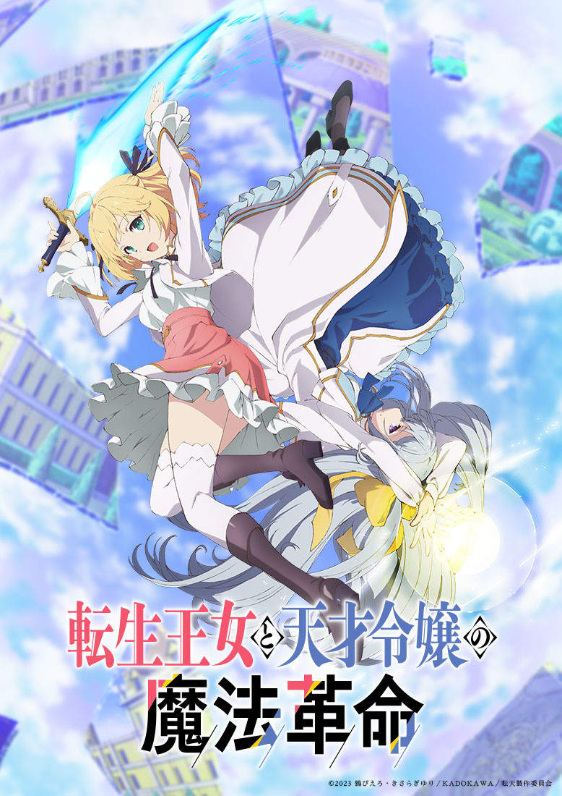

転生王女と天才令嬢の魔法革命

轉生公主與天才千金的魔法革命，輕小說改編動畫。由鴉ぴえろ所作。轉生至魔法理所當然存在的世界，並在童年時重拾前世記憶的公主「艾妮絲菲亞」，夢想是用魔法翱翔於天際這件史無前例又缺乏常識的事。然而，卻不知道為何無法使用魔法而遭貴族鄙視，但卻建立了獨特的魔法理論並一直獨自研究魔法。在某個機緣巧合下，艾妮絲菲亞撞見了天才公爵千金「尤菲莉亞」，且正面臨被艾妮絲菲亞的弟弟「亞爾加德」王子當眾宣言要取消婚約的窘境。為了幫助尤菲莉亞重拾名譽，艾妮絲菲亞所選擇的方法竟是要對方跟她同居，一起研究魔法！？
怪咖轉生公主與冰山美人天才千金的邂逅，將持續為這個國家、這個世界，還有兩人的未來帶來變化。兩位少女攜手開拓未來，「轉生╳天才」的魔法奇幻故事，就此揭幕！官方網站連結：TVアニメ「転生王女と天才令嬢の魔法革命」公式サイト
關鍵字:輕小說改編 1